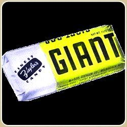
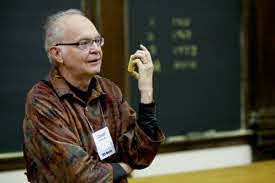

CS Personality: Donald Knuth
Overview
Donald Knuth, an American mathematician, computer scientist, and retired professor, contributed to our understanding of computing and complex algorithms today. Dubbed as the “father of the analysis of algorithms,” Knuth thoroughly researched the advanced science of algorithms and developed various mathematical techniques to efficiently understand and utilize them.
Early Life
Knuth was born on January 10, 1938 in Milwaukee, Wisconsin to Henry Knuth and Louise Marie Bohning, a couple that taught bookkeeping and owned a small printing business. Donald had shown exceptional skill from a very young age, thinking of ingenious ways to solve problems. One example of such innovative prowess is evident when he entered a competition set up by Ziegler, a candy bar company. The goal of the competition was to see how many words could be produced from the letters of the phase “Ziegler’s Giant Bar.”
He spent two weeks, skipping school, with an excuse of a “bad tummy ache,” finding out how many words, how many combinations he could make using a dictionary. At the end, he came up with 4,500 words, 2,000 more than what the judges found themselves. Knuth easily won the competition, using his prize money to buy the school a new television and to buy his schoolmates a candy bar. This is one of many achievements that catalyzed the success of his career involving mathematics, algorithms, and eventually computer science.
Early Work
After receiving his PhD in mathematics at Caltech, he immediately joined their faculty as an assistant professor and went on to write a book on computer compiling language, developing a fundamental theory of computing and programming, which was crafted into The Art of Computer Programming. Knuth poured so much into the books that he ended up writing seven volumes to thoroughly cover the subject.

He eventually left Caltech to pursue a job at the Institute for Defense Analyses' Communications Research Division (IDA) and became part of a team at Princeton University that was conducting mathematical research on cryptography for the NSA. He created some groundbreaking contributions in the computing world that would forever change the way we look at math and technology.
Contributions in Computing
One of his contributions in computing was popularizing asymptotic notation, also known as “Big O notation,” This notation is a mathematical notation describing the limiting or delimiting behavior of a function when it approaches a certain value or infinity. Knuth applied this in his computer science studies, where he used the big O notation to “classify” algorithms with respect to run time and amount of memory they take up relative to their input size. When Godfrey Harold Hardy and John Edensor Littlewood introduced the Ω-symbol to represent asymptotic notation, Knuth improved upon their findings and published a paper in 1976 to justify his used of the omega symbol to identify a “stronger property.”
Conclusion
Knuth has contributed so many in the world of computing, both big and small. He is both a writer and a scholar on top of his more prestigious titles, authoring several more books on computing and the study of algorithms, even creating the WEB and CWED programing systems as well as engineered the MIX/MMIX architectures. His work resulted in his receiving the ACM Turning Award in 1974, which is equivalent to the Nobel Peace Prize of computer science and engineering. No doubt, no one deserves that more than the “father of the analysis of algorithms.”